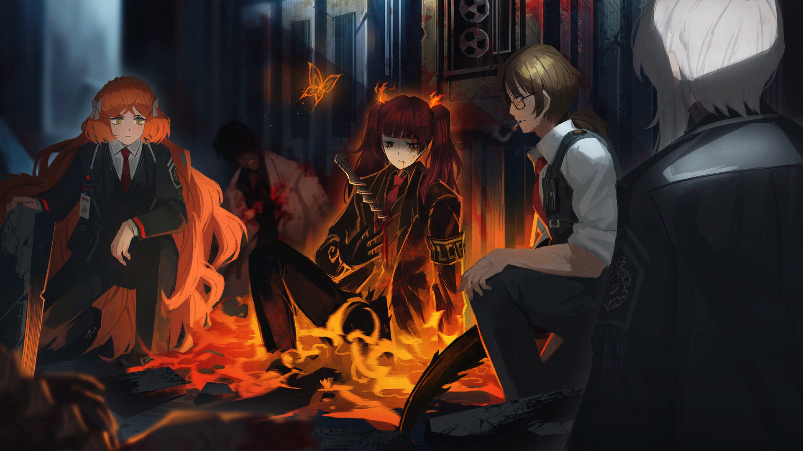

Trong khi đối phó với những Tội Chủng trốn thoát và tiến về phía trước...
Gregor đột nhiên dừng bước.
Tù Nhân #13Gregor
Chờ đã, có tiếng thở ở đâu đó...? Mặc dù hơi nhỏ...
Tù Nhân #5Meursault
Ừm. Nghe thấy rồi.
Tù Nhân #5Meursault
Ở gần đây.
Meursault nhìn chằm chằm vào cánh cửa khổng lồ méo mó đã đổ của buồng cách ly .
Tù Nhân #12Outis
Có khả năng là Tội Chủng hay kẻ thù gì khác không?
Tù Nhân #5Meursault
Khả năng đó là rất thấp. Tiếng thở không ổn định và nhỏ, giống như của một người bị thương.
Tù Nhân #12Outis
Hm...
Tù Nhân #13Gregor
Này, cô Outis. Nếu có dù chỉ là một chút hy vọng rằng ai đó có thể sống sót, thì không phải chúng ta nên cứu họ chứ?
Tù Nhân #12Outis
... Việc đó cũng không hẳn là gây ấn tượng xấu với trụ sở chính.
Tất cả cùng đưa tay vào khe hở bị móp méo và dùng lực nâng cánh cửa lên với tiếng ma sát nặng nề.

Ban nghiên cứuAlyssa
...!
Trong đó có một người đang thở hổn hển một cách lặng lẽ.
Tù Nhân #8Ishmael
... Người này là...
Đó là nghiên cứu viên đã hỗ trợ chúng tôi khi gặp Hoenheim để khám sức khỏe định kỳ trước đây.
Ban nghiên cứuAlyssa
... Alyssa... Là Alyssa. Chắc mấy người chẳng nhớ tên tôi đâu nhỉ...
Alyssa ôm ngực như đang đau đớn, rồi từ từ nói ra tên mình.
Tù Nhân #8Ishmael
... Cô Alyssa, tình trạng của cô...
Ban nghiên cứuAlyssa
Mỗi khi thở... là tôi lại thấy đau...
Ban nghiên cứuAlyssa
Tôi chẳng thể hét nổi để mà kêu cứu...
Ban nghiên cứuAlyssa
Tôi nhớ lời trưởng ban đã từng nói... Chúng ta không phải là nhân vật chính... Nếu một đồng xu được tung lên... chúng ta chỉ có thể chờ xem nó sẽ ra sấp hoặc ngửa thôi...
Alyssa cười tự giễu, rồi nhăn mặt vì cơn đau trở nên dữ dội hơn.
Tù Nhân #13Gregor
Thôi nào, đã đau thế này rồi mà còn đùa cợt được nữa... Khoan, cái cọc này...
Phần mà Alyssa ôm trong tay có một vũ khí hình xoắn ốc giống như những cái mà các thi thể trong hành lang đang nắm chặt.
Tù Nhân #12Outis
Chuyện gì đã xảy ra vậy?
Ban nghiên cứuAlyssa
Chuông báo động...
Ban nghiên cứuAlyssa
Chuông báo động không reo.
Ban nghiên cứuAlyssa
Bộ phận của chúng tôi được thiết kế sao cho... nếu có bất kỳ sự cố nào xảy ra, dù chỉ nhỏ nhất... chuông báo động sẽ lập tức vang lên.
Ban nghiên cứuAlyssa
Ông Hohenheim... đã rất kiên quyết phản đối việc lặp lại số phận của tập đoàn Lobotomy...
Khuôn mặt của một Alyssa vốn đang bình tĩnh nói chuyện bắt đầu hơi nhăn nhó.
Có vẻ như đó không chỉ là do cơn đau từ thứ cắm vào tim cô.
Tù Nhân #8Ishmael
Cho đến ngay trước khi mấy người kịp nhận ra cuộc tấn công... không có bất kỳ âm thanh cảnh báo nào được phát ra.
Ban nghiên cứuAlyssa
... Đúng. Chuyện này không nên xảy ra mới phải...
Chúng tôi lặng lẽ chờ đợi cho đến khi Alyssa đang xúc động lấy lại bình tĩnh.
Ban nghiên cứuAlyssa
Đột nhiên... đèn tắt.
Ban nghiên cứuAlyssa
Tôi nghĩ đó là do thí nghiệm đang tiến hành...
Ban nghiên cứuAlyssa
Thí nghiệm tiêu tốn nhiều điện năng... Trưởng ban lúc nào cũng phàn nàn về chuyện đó hết...
Ban nghiên cứuAlyssa
Ha, chó chết thật. Đáng lẽ từ lúc đó... tôi phải thấy có gì đó sai sai rồi...
Giọng nói đầy tự trách của cô ấy vang lên một cách bất lực.
Ban nghiên cứuAlyssa
Nên tôi cứ nghĩ cứ để đó là nó sẽ tự nhiên khắc phục theo thời gian thôi...
Ban nghiên cứuAlyssa
Các nhân viên khác cũng vậy... Không ai mảy may để tâm chuyện đó... Bởi vì...
Tù Nhân #8Ishmael
Không có tiếng chuông báo động. Ừ, tôi hiểu mà.
Ban nghiên cứuAlyssa
Tôi có tài liệu phải mang đến phòng thí nghiệm... Nên đang trên đường đến đó...
Ban nghiên cứuAlyssa
Rồi... tôi nghe thấy...
Ban nghiên cứuAlyssa
Trong bóng tối, tôi nghe rõ được tiếng giày của một ai đó...
Ban nghiên cứuAlyssa
Không chậm cũng không nhanh... đó là một bước đi ung dung nhưng mang theo sự tiết chế. Người có dáng đi như vậy... không nằm trong bộ phận của chúng tôi. Ai cũng bận rộn nên hầu như đều có những bước đi gấp gáp vội vàng.
Ban nghiên cứuAlyssa
Ngay sau đó... mọi thứ bắt đầu bằng tiếng kêu quằn quại giãy chết của ai đó...
Ban nghiên cứuAlyssa
Một cuộc hỗn loạn không hồi kết tiếp diễn...
Ban nghiên cứuAlyssa
Không một ai biết chuyện gì đang xảy ra...
Ban hành chínhNghiên cứu viên hoảng sợ
Cứu tôi với...
Ban hành chínhNghiên cứu viên trốn chạy
Ai... ai vậy?
Ban hành chínhNghiên cứu viên hoảng sợ
AAAAAGH!
Ban hành chínhNghiên cứu viên trốn chạy
AHH!
Ban nghiên cứuAlyssa
Tôi không còn cách nào khác ngoài cắm đầu chạy...
Ban nghiên cứuAlyssa
Rồi tôi cảm thấy một cơn gió nhẹ lướt qua...
Ban nghiên cứuAlyssa
Ngực tôi nóng bừng lên... Tôi cúi đầu xuống và thấy... nó đã bị đâm...
Ban nghiên cứuAlyssa
Tôi mất ý thức một lúc, khi tỉnh dậy... buồng cách ly đã bị ai đó mở tung...
Ban nghiên cứuAlyssa
Đám Huyễn Tưởng Thể và Tội Chủng, thậm chí cả Dị Biến đều thoát ra hết... Cửa buồng cách ly bị bật ra... khiến tôi không tài nào cử động được...
Tù Nhân #2Faust
Vậy là cô không ở cùng với Hohenheim và những người khác.
Ban nghiên cứuAlyssa
Trưởng ban... À, chắc là trưởng ban đang ở gần phòng họp.
Ban nghiên cứuAlyssa
... Cô có thể lấy hộ giấy và bút trong túi của tôi ra được không?
Alyssa vẽ một bản đồ sơ lược trên một mảnh giấy mà cô ấy xé ra.
Ban nghiên cứuAlyssa
Tôi không biết những người khác có an toàn hay không... Nhưng nếu đi theo hướng này, có lẽ sẽ tìm được manh mối về tung tích của họ.
Tù Nhân #13Gregor
Được, được. Tôi hiểu đại khái rồi, giờ hãy kiểm tra vết thương của cô cái đã.
Gregor nói một cách bình tĩnh.
Tù Nhân #7Heathcliff
Chết dẫm thật... máu cứ chảy hoài. Cái thứ này... trông chả giống vũ khí bình thường.
Tù Nhân #7Heathcliff
Bà đó. Có biết gì không?
Heathcliff hỏi Outis với ánh mắt hoang mang.
Tù Nhân #12
Outis
.......
Tù Nhân #12Outis
Càng cử động thì nó sẽ càng ăn sâu vào cơ thể.
Tù Nhân #12Outis
Có vẻ như đây là một loại sản phẩm từ xưởng chuyên dùng để áp chế hơn là lấy mạng người khác.
Tù Nhân #13Gregor
Cắm một thứ như thế này vào... tức là nếu muốn giết, thì đã có thể làm rồi.
Tù Nhân #13Gregor
Có thật là chỉ là muốn cầm chân thôi, hay... đây là một loại thú vui ngược đời nào đó vậy?
Tù Nhân #12Outis
Hừm... Có lẽ việc nằm yên đã giữ lại mạng cho cô. Cô đã đưa ra quyết định sáng suốt đấy.
Ban nghiên cứuAlyssa
Sáng suốt cái gì chứ, chẳng qua là tôi quá đau để nghĩ đến chuyện cử động thôi...
Tù Nhân #3Don Quixote
... Nếu ta tìm được thứ gì đó để khâu hoặc chữa lành vết thương, thì có thể rút cái vũ khí đó ra được chứ?
Tù Nhân #9Rodion
Đúng rồi. Đâu thể cứ mang cái đó trên người mãi được. Nhanh chóng rút nó ra rồi chữa trị vết thương—
Tù Nhân #4Ryōshū
Vô ích.
Ryōshū phun ra những lời đó.
Tù Nhân #6Hồng Lộ
Vô ích ư? Không chừng là một dạng thiết bị không thể rút được?
Tù Nhân #4Ryōshū
Không hề. Rút nó ra chẳng khó đến vậy.
Tù Nhân #4Ryōshū
Tốt hơn hết là đừng làm thế thôi.
Tù Nhân #7Heathcliff
Vậy nếu cố dùng vũ lực rút ra... thì là thành mấy cái xác nằm trên hành lang à?
Tù Nhân #4Ryōshū
Đúng. Cái vòng xoắn đó... đào sâu đến vô tận để đến được phía bên kia, nhưng nghịch lý thay nó không bao giờ tự mình đâm thủng đến nơi được. Bởi vì nó không thể chạm tới đích đến.
??????
Con gái. Đây là... một vòng xoắn.
??????
Một khi đã cắm vào, chỉ cần cựa quậy một chút là nó sẽ tiếp tục ăn sâu vào... nên chỉ có thể nằm yên tại chỗ thôi.
??????
Lúc đầu thì cảm giác nó chỉ như một cái gai nhọn, nhưng càng cố rút ra thì nó lại càng ăn vào sâu hơn.
??????
Nhưng dẫu cho nó có tiếp tục ăn sâu thêm nữa, nó vẫn không thể xuyên tới nơi được.
??????
Càng cố đến cùng, vòng xoắn càng chậm lại... Rồi cuối cùng nó chẳng thể đến được điểm đích.
??????
Mi biết cách giải nó mà phải chứ?
??????
Ta sẽ nói @#$ %! &*$ #@$ khi mà mi làm xong việc.
??????
Nếu không có @#$ %! &*$ #@$... mà cố rút nó ra...
Vị trí Ban nghiên cứu LCE - Khu thí nghiệm
Tù Nhân #4Ryōshū
Toàn bộ những gì bị nó găm vào cùng sẽ bị lôi ra hết sạch.
Tù Nhân #4Ryōshū
Nên nếu còn muốn sống, thì cứ nằm yên như thế đi.
Quản LýDante
<.......>
Những gì tôi có thể nhìn thấy, giống như cũ, chỉ là những mảnh vỡ còn sót lại... Mảnh vỡ của ký ức.
??????
Không có @#$ %! &*$ #@$… mà cố rút nó ra…
??????
Không có @#$ số đối #@$... mà cố rút nó ra...
Tôi lại một lần nữa từ từ gợi lại những ký ức vụn vỡ của Ryōshū.
Cảnh tượng bên trong... ký ức bị cắt mảnh đấy.
Như mọi khi, tôi chẳng biết làm thế nào để mà gợi lại những thứ đấy.
Chỉ là... khi tôi quyết định muốn làm điều đó, cảm giác gợi lại chúng cũng tự nhiên mà đến.
Tù Nhân #4Ryōshū
Hoh. Thấy gì à, Đồng Hồ?
Quản LýDante
<Ryōshū, có khi nào cái vòng xoắn đó...>
Quản LýDante
<Cần một dạng mật mã nào đó chăng?>
Tù Nhân #4Ryōshū
...!
??????
Để giải được nghịch lý của vòng xoắn... cần phải có con số đối ứng.
??????
Không có con số đối ứng... mà cố rút nó ra...
??????
Kiếm và vỏ. Âm và dương. Quá khứ và tương lai. Ta và mi. Mọi thứ đều được ghép đôi đối ứng theo một cách chán kinh khủng khiếp.
??????
Mi có hiểu chết đi là gì không?
??????
Cắt đứt một thứ gì đó là ra sao?
Nét mặt của Ryōshū nhất thời trở nên kỳ lạ.
Tù Nhân #4Ryōshū
Ê đầu trắng.
Tù Nhân #2Faust
... Mời nói.
Tù Nhân #4Ryōshū
Vòng xoắn có thể phá giải. Như Đồng Hồ nói, việc giải nó có liên đến các con số.
Tù Nhân #4Ryōshū
Nhưng... ta không nhớ chính xác nó cần gì.
Tù Nhân #4Ryōshū
Ngươi có biết gì về vũ khí dạng vòng xoắn tên là Vòng Xoắn Con Rùa không?
Tù Nhân #2Faust
... Dù chỉ mới một chút thôi nhưng xem ra cô cũng đã hiểu được phương pháp sử dụng Faust rồi.
Tù Nhân #2Faust
Sau khi tôi xác nhận trực quan thiết bị này, và được cô Ryōshū đây cung cấp những cụm từ giúp thu hẹp phạm vi, nên giờ Faust có thể biết được.
Tù Nhân #11Sinclair
Phương pháp... sử dụng...?
Bỏ lại những ánh mắt nghi hoặc của các Tù Nhân, Faust cẩn thận nhặt cái vòng xoắn nằm trong tay của một thi thể khác.
Tù Nhân #2Faust
"Vòng Xoắn Con Rùa của Zeno". Theo Faust thì thiết bị này được gọi như vậy.
Một lát sau, Faust kéo phần dưới của chiếc vòng xoắn, nắp của nó mở ra.
Tù Nhân #2Faust
Đó là ổ khóa. Con số đối ứng có bảy chữ số.
Tù Nhân #2Faust
Ngoài ra, lý do máu cô Alyssa không ngừng chảy là... vòng xoắn không thể xuyên qua tim, nhưng bản chất ăn sâu vào trong của nó là vĩnh cửu.
Tù Nhân #12Outis
... Bị khóa thì có thể dùng Tiên để mở không?
Quản LýDante
<Tiên...?>
Tù Nhân #1Yi Sang
Cô ấy đang nhắc đến Đặc Dị Điểm của tập đoàn F.
Tù Nhân #1Yi Sang
Nếu bị khóa... thì một công nghệ mở khóa được mọi thứ... chẳng phải là một phương án hay sao?
Tù Nhân #2Faust
... Có thể mở được bằng Tiên, nhưng quan trọng là công nghệ được áp dụng cho vũ khí vòng xoắn này có giá trị đến mức nào.
Tù Nhân #12Outis
... Muốn chắc ăn thì cần phải có một Tiên đắt đỏ. Nhưng vật như vậy thì... không tài nào tìm được ở đây ngay lập tức được.
Tù Nhân #4Ryōshū
.......
Tất cả chúng tôi bao gồm cả Ryōshū, đều nhìn chốt khóa của vòng xoắn với vẻ mặt khó xử.
Chẳng có cách nào mà biết được 7 chữ số đó cả.
Tù Nhân #7Heathcliff
Nghe méo ổn lắm... nhưng không thể mò từ 0 trở đi à?
Tù Nhân #2Faust
Cũng giống như các loại khóa thông thường, nếu nhập sai mật mã quá số lần quy định—
Tù Nhân #7Heathcliff
Chậc, bỏ đi. Chỉ tổ chết lãng nhách chứ gì.
Ban nghiên cứuAlyssa
Thành thật thì tôi muốn nói rằng... tôi sợ lắm, nên đừng bỏ tôi mà đi...
Ban nghiên cứuAlyssa
Nhưng gần phòng thí nghiệm... có thể còn những người sống sót tập trung ở đó...
Ban nghiên cứuAlyssa
Mấy người biết mà, trưởng ban của tụi tôi ấy. Anh ấy không phải là người dễ ăn vậy đâu...
Ban nghiên cứuAlyssa
Thà đi giúp những người đó còn hơn...
Tù Nhân #11Sinclair
Nhưng cứ thế này mãi thì...
Ban nghiên cứuAlyssa
Mà... thế còn hơn là chết xong rồi bị đem làm trò cười như trong "100 Cách Đần Độn Nhất Một Nhà Nghiên Cứu Có Thể Chết" rồi...
Có lẽ do ảnh hưởng từ Hohenheim, Alyssa đang cố gắng hết sức để tỏ ra bình tĩnh.
Nếu trong một tình huống khác, tôi có thể hỏi "100 Cách Đần Độn Nhất Một Nhà Nghiên Cứu Có Thể Chết" là cái gì..
Nhưng tôi chỉ có thể nín thở. Một sự im lặng thật đớn đau.
Tù Nhân #3Don Quixote
.......
Tù Nhân #3Don Quixote
Cô Alyssa, tôi sẽ quay lại.
Ban nghiên cứuAlyssa
... Hể?
Tù Nhân #3Don Quixote
Tôi đây nhất định sẽ quay lại. Nên chính vì thế...
Tù Nhân #3Don Quixote
Nếu nhận thấy kẻ thù cận kề, hãy trốn đi càng xa càng tốt. Xin đừng bỏ cuộc.
Ban nghiên cứuAlyssa
.......
Tù Nhân #7Heathcliff
Tiện đây thì, con nhóc đó một khi đã nói thì nó sẽ giữ lời cho bằng được, nên đừng có lơ nhỏ.
Ban nghiên cứuAlyssa
Vâng... tôi sẽ làm vậy, cảm ơn...
Tù Nhân #4Ryōshū
c-485.
Ryōshū khẽ thì thầm.
Tù Nhân #4Ryōshū
Đồng Hồ, đã thử chơi trò truy tìm lối thoát bao giờ chưa?
Quản LýDante
<Ý cô là sao?>
Tù Nhân #4Ryōshū
Đây là một dạng trò chơi truy tìm lối thoát.
Tù Nhân #4Ryōshū
Để giải câu đố thì ngươi cần phải thu thập manh mối.
Quản LýDante
<Trò chơi...>
Tù Nhân #4Ryōshū
Nhỏ nghiên cứu viên đó. Ngươi muốn cứu cô ta mà phải không nào?
Tù Nhân #4Ryōshū
Khi đó thì ngươi sẽ cần số seri của cái vòng xoắn đấy, ta vừa mới xem qua nó xong.
Bỏ lại Alyssa đang hấp hối và tiếp tục đi về phía trước là một việc rất đau khổ.
Chúng tôi cũng không chắc liệu có thể cứu được Alyssa hay không.
 Tù Nhân #13
Gregor
Tù Nhân #13
Gregor
 Tù Nhân #5
Meursault
Tù Nhân #5
Meursault
 Tù Nhân #12
Outis
Tù Nhân #12
Outis
 Ban nghiên cứu
Alyssa
Ban nghiên cứu
Alyssa
 Tù Nhân #8
Ishmael
Tù Nhân #8
Ishmael
 Ban hành chính
Nghiên cứu viên hoảng sợ
Ban hành chính
Nghiên cứu viên hoảng sợ
 Tù Nhân #2
Faust
Tù Nhân #2
Faust
 Tù Nhân #7
Heathcliff
Tù Nhân #7
Heathcliff
 Tù Nhân #3
Don Quixote
Tù Nhân #3
Don Quixote
 Tù Nhân #9
Rodion
Tù Nhân #9
Rodion
 Tù Nhân #4
Ryōshū
Tù Nhân #4
Ryōshū
 Tù Nhân #6
Hồng Lộ
Tù Nhân #6
Hồng Lộ

 Quản Lý
Dante
Quản Lý
Dante
 Tù Nhân #11
Sinclair
Tù Nhân #11
Sinclair
 Tù Nhân #1
Yi Sang
Tù Nhân #1
Yi Sang